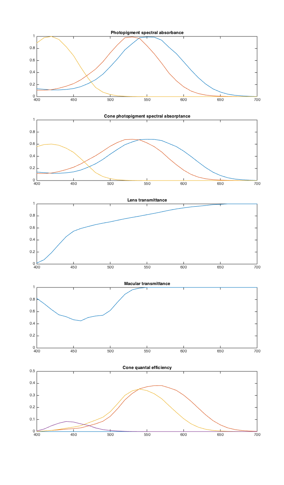
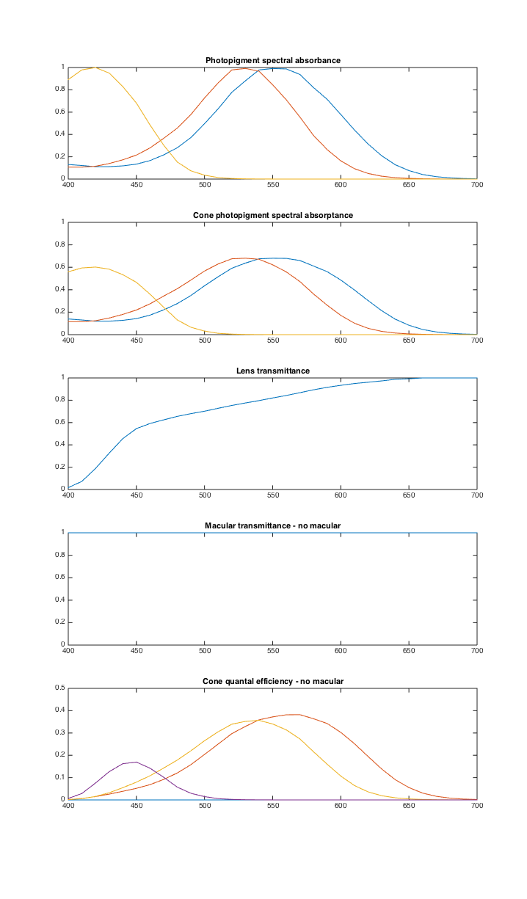

Contents
- Function implementing the isetbio validation code
- Create appropriate structures
- Human cone absorbance
- Now get the full PTB photoreceptors structure of CIE 2-deg
- Peak optical density
- Get cone spectral absorptance.
- Lens transmittance
- Macular transmittance
- Quantal efficiency of cones
- Tuck away other validation data
- Plot
- Do the whole thing again, but with the macular pigment set to zero
- Absorbance
- Plot cone spectral absorrptance
- Lens transmittance
- Macular transmittance
- Quantal efficiency of cones
- Plot
- End
function varargout = v_Cones(varargin) % % Test cone, lens and macular function calls. Compare against PTB answers. % % See also v_IrradianceIsomerizations. % % Issues: % % 1) It might be nice to test some sets as well as gets, and show how to % take a customized set of parameters from PTB and get these parameters to % show up in the isetbio structure. % % 2) Somewhere we should explain what units of retinal irradiance the % quantal efficiencies expect, and figure out how on earth these match the % PTB given that we didn't do any work to match the inner segment diameter. % % ISETBIO Team Copyright 2013-14 varargout = UnitTest.runValidationRun(@ValidationFunction, nargout, varargin); end
Function implementing the isetbio validation code
function ValidationFunction(runTimeParams)
Create appropriate structures
sensor = sensorCreate('human'); wave = sensorGet(sensor,'wave'); human = sensorGet(sensor,'human');
Human cone absorbance
These are the Stockman-Sharpe absorbance by default, and are normalized to unity as is standard.
coneAbsorbance = coneGet(human.cone,'absorbance'); wave = coneGet(human.cone,'wave'); UnitTest.validationData('wave',wave); UnitTest.validationData('coneAbsorbance', coneAbsorbance); temp = load('T_log10coneabsorbance_ss'); ptbCompare.log10coneAbsorbance = SplineCmf(temp.S_log10coneabsorbance_ss,temp.T_log10coneabsorbance_ss,wave)'; ptbCompare.coneAbsorbance = 10.^ptbCompare.log10coneAbsorbance; UnitTest.assertIsZero(max(abs(ptbCompare.coneAbsorbance-coneAbsorbance)),'Difference between PTB datafile and isetbio cone absorbance',1e-12);
Now get the full PTB photoreceptors structure of CIE 2-deg
This will let us compare absorbance in another way, as well as compare all sorts of other quantities.
ptbPhotoreceptors = ptb.StockmanSharpePhotoreceptors(wave);
UnitTest.assertIsZero(max(abs(ptbPhotoreceptors.absorbance'-coneAbsorbance)),'Difference between PTB photoreceptor structure and isetbio cone absorbance',1e-12);
Peak optical density
PTB values differ by a bit, e.g. 0.5000 in isetbio compared with 0.5004 in PTB. This can be traced to an rounding difference in the CIE standard, which gives the OD by formula in equn 5.2 (which yields e.g. 0.5004 to three places for L cone OD) but which also gives the peak optical density for the L cones as 0.5.
peakOpticalDensity = coneGet(human.cone,'pod'); UnitTest.assertIsZero(max(abs(ptbPhotoreceptors.axialDensity.value-peakOpticalDensity)),'Difference between PTB and isebio peak optical density',1e-3);
Get cone spectral absorptance.
These take optical density into account, but not anything about pre-retinal absorption. The PTB and isetbio values differ by about 0.001, wich I think has to do with the rounding difference in peak optical density (see above).
coneAbsorptance = coneGet(human.cone,'cone spectral absorptance'); UnitTest.validationData('coneSpectralAbsorptance', coneAbsorptance); UnitTest.assertIsZero(max(abs(ptbPhotoreceptors.absorptance'-coneAbsorptance)),'Difference between PTB photoreceptor structure and isetbio cone absorbance',1e-03);
Lens transmittance
Not sure exactly which PTB file the isetbio lens transmittance was taken from, but the answer comes out very close to what PTB uses for its CIE 2-deg case.
lensTransmittance = lensGet(human.lens,'transmittance'); UnitTest.validationData('lensTransmittance', lensTransmittance); UnitTest.assertIsZero(max(abs(ptbPhotoreceptors.lensDensity.transmittance'-lensTransmittance)),'Difference between PTB and isetbio lens transmittance',1e-12);
Macular transmittance
macularTransmittance = macularGet(human.macular,'transmittance'); UnitTest.validationData('macularTransmittance', macularTransmittance); UnitTest.assertIsZero(max(abs(ptbPhotoreceptors.macularPigmentDensity.transmittance'-macularTransmittance)),'Difference between PTB and isetbio macular transmittance',0.005);
Quantal efficiency of cones
These are the actual probability that an incident quanta is absorbed, starting with irradiance. They take into account lens and macular pigment, as well as inner segment diameter and pigment quantal efficiency.
coneQE = sensorGet(sensor,'spectral qe'); UnitTest.validationData('coneQE', coneQE); UnitTest.assertIsZero(max(abs(ptbPhotoreceptors.isomerizationAbsorptance'-coneQE(:,2:4))),'Difference between PTB and isetbio cone quantal efficiency',1e-3);
Tuck away other validation data
UnitTest.validationData('ptbCompare',ptbCompare); UnitTest.validationData('ptbPhotorceptors',ptbPhotoreceptors);
Plot
if (runTimeParams.generatePlots) vcNewGraphWin([],'tall'); subplot(5,1,1) plot(wave,coneAbsorbance); ylim([0 1]); title('Photopigment spectral absorbance'); subplot(5,1,2) plot(wave,coneAbsorptance); ylim([0 1]); title('Cone photopigment spectral absorptance') subplot(5,1,3) plot(wave,lensTransmittance); ylim([0 1]); title('Lens transmittance'); subplot(5,1,4) plot(wave,macularTransmittance); ylim([0 1]); title('Macular transmittance'); subplot(5,1,5) plot(wave,coneQE); ylim([0 0.5]); title('Cone quantal efficiency'); end
Do the whole thing again, but with the macular pigment set to zero
The cone absorbance, cone absorptance, and lens transmittance don't change, but macular transmittance and the cone quantal efficiences do.
Note that we need to be sure to write the changed human structure back into the sensor.
human.macular = macularSet(human.macular,'density',0); sensor = sensorSet(sensor,'human',human); human = sensorGet(sensor,'human');
Absorbance
coneAbsorbanceNoMac = coneGet(human.cone,'absorbance'); UnitTest.validationData('coneAbsorbanceNoMac', coneAbsorbanceNoMac);
Plot cone spectral absorrptance
coneSpectralAbsorptanceNoMac = coneGet(human.cone,'cone spectral absorptance'); UnitTest.validationData('coneSpectralAbsorptanceNoMac', coneSpectralAbsorptanceNoMac);
Lens transmittance
lensTransmittanceNoMac = lensGet(human.lens,'transmittance'); UnitTest.validationData('lensTransmittanceNoMac', lensTransmittanceNoMac);
Macular transmittance
macularTransmittanceNoMac = macularGet(human.macular,'transmittance'); UnitTest.validationData('macularTransmittanceNoMac', macularTransmittanceNoMac);
Quantal efficiency of cones
coneQENoMac = sensorGet(sensor,'spectral qe'); UnitTest.validationData('coneQENoMac', coneQENoMac);
Plot
if (runTimeParams.generatePlots) vcNewGraphWin([],'tall'); subplot(5,1,1) plot(wave,coneAbsorbanceNoMac); ylim([0 1]); title('Photopigment spectral absorbance'); subplot(5,1,2) plot(wave,coneSpectralAbsorptanceNoMac); ylim([0 1]); title('Cone photopigment spectral absorptance') subplot(5,1,3) plot(wave,lensTransmittanceNoMac); ylim([0 1]); title('Lens transmittance'); subplot(5,1,4) plot(wave,macularTransmittanceNoMac); ylim([0 1]); title('Macular transmittance - no macular'); subplot(5,1,5) plot(wave,coneQENoMac); ylim([0 0.5]); title('Cone quantal efficiency - no macular'); end
End
end